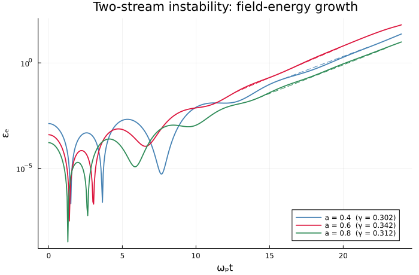
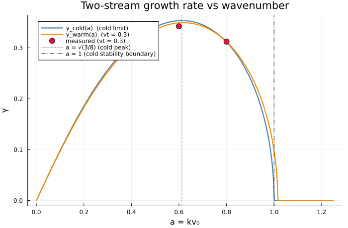

The two-stream instability
Growth rate against the cold and warm dispersion relations.
julia --project=verification verification/two-stream.jlEvery other verification here is a damped or neutral mode. This is the first unstable one, and it catches a class of error damping cannot: a sign flip in the field push turns damping into growth and growth into damping, so a suite made only of damped cases is half-blind to it.
two_stream, γ_cold and the rest come from test/verification_harness.jl, not from a copy here. They were copied once, and the copy carried tmax = 24.0 without the paragraph explaining what bounds it – the slowest fit completing, and until advect! refused a step past the Courant limit, the fastest run diverging after its fit. A bare number with nothing saying why is worse than the duplication it came from. Shared for the reason wakefield is shared: the script and the test that asserts its claims run the same setup.
using Plots
using Vasilek
include(joinpath(pkgdir(Vasilek), "test", "verification_harness.jl"))
here = @__DIR__;Sanity check before trusting the closed form for the rest of the script.
worst = maximum(a -> abs(two_stream_residual(im*γ_cold(a), a)), (0.2, 0.4, 0.6, 0.8, 0.95))
println("closed form vs dispersion relation: worst |residual| = ", worst)
println("warm band edge at vt = 0.3 lies between a = 1.0 (γ = ",
round(two_stream_warm(1.0); digits = 5), ") and a = 1.05 (γ = ",
two_stream_warm(1.05), ")")closed form vs dispersion relation: worst |residual| = 1.3988810110276972e-14
warm band edge at vt = 0.3 lies between a = 1.0 (γ = 0.09823) and a = 1.05 (γ = 0.0)
Growth at three wavenumbers
The three wavenumbers the test asserts, with the fitted exponential overlaid on the window growth_rate actually used.
growth = plot(yscale = :log10, xlabel = "ωₚt", ylabel = "εₑ",
legend = :bottomright,
title = "Two-stream instability: field-energy growth",
size = (700, 460))
measured_a = (0.4, 0.6, 0.8)
measured_γ = Float64[]
for (a, color) in zip(measured_a, (:steelblue, :crimson, :seagreen))
t, ε_e = two_stream(a)
γ, t0, t1 = growth_rate(t, ε_e; lo = 100*ε_e[1], hi = 5.0)
push!(measured_γ, γ)
plot!(growth, t, ε_e; label = "a = $a (γ = $(round(γ; digits = 3)))",
color = color, linewidth = 1.8)
# `exp(2γΔt)`, not `exp(γΔt)`: `growth_rate` returns the rate of the field
# *amplitude*, defined by `ε_e ∝ exp(2γt)`, which is the convention that
# lets it be compared with `γ_cold` directly. Drawn with one γ the dashed
# line peeled a decade below the curve it is supposed to lie along by the
# end of the window -- 6.0x, 11.6x and 17.9x at these three wavenumbers --
# so the plot showed a correct fit failing.
i0 = argmin(abs.(t .- t0))
tt = range(t0, t1; length = 50)
plot!(growth, tt, ε_e[i0] .* exp.(2 .* γ .* (tt .- t0));
linestyle = :dash, color = color, label = "")
end
savefig(growth, joinpath(here, "two-stream-growth.png"));
Growth rate against wavenumber
The growth rate against the closed forms over the whole branch: γ(a) is non-monotone, peaking near a = √(3/8) and reaching zero at the stability boundary – reproducing that shape is a statement about the dispersion relation, not about one point on it.
Two curves, because they are not the same curve. The cold one is elementary and stops dead at a = 1; the warm one is the root of the same relation for the Maxwellian beams this study actually runs, and it is what the test asserts against. They cross near a = 0.77 and part company entirely past a = 1, where warm beams are still unstable – which is why the measured point at a = 1.0 sits on a curve the cold form says should not exist.
avals = 0.001:0.002:1.25
warm = two_stream_warm.(avals)
dispersion = plot(avals, γ_cold.(avals); label = "γ_cold(a) (cold limit)",
xlabel = "a = kv₀", ylabel = "γ",
title = "Two-stream growth rate vs wavenumber",
linewidth = 2.2, color = :steelblue, size = (700, 460))
plot!(dispersion, avals, warm; label = "γ_warm(a) (vt = 0.3)",
linewidth = 2.2, color = :darkorange)
scatter!(dispersion, collect(measured_a), measured_γ;
label = "measured (vt = 0.3)", markersize = 6, color = :crimson)
vline!(dispersion, [sqrt(3/8)]; linestyle = :dot, color = :gray,
label = "a = √(3/8) (cold peak)")
vline!(dispersion, [1.0]; linestyle = :dashdot, color = :black,
label = "a = 1 (cold stability boundary)")
savefig(dispersion, joinpath(here, "two-stream-dispersion.png"));
println("a, γ measured, γ warm, error, γ cold, error")
for (a, γ) in zip(measured_a, measured_γ)
w = two_stream_warm(a)
println(" ", a, " ", round(γ; digits = 5),
" ", round(w; digits = 5), " (", round(100*(γ - w)/w; digits = 2), "%)",
" ", round(γ_cold(a); digits = 5),
" (", round(100*(γ - γ_cold(a))/γ_cold(a); digits = 2), "%)")
enda, γ measured, γ warm, error, γ cold, error
0.4 0.30172 0.30362 (-0.63%) 0.30819 (-2.1%)
0.6 0.34227 0.34909 (-1.95%) 0.35339 (-3.15%)
0.8 0.31228 0.31201 (0.09%) 0.31134 (0.3%)
This page was generated using Literate.jl.